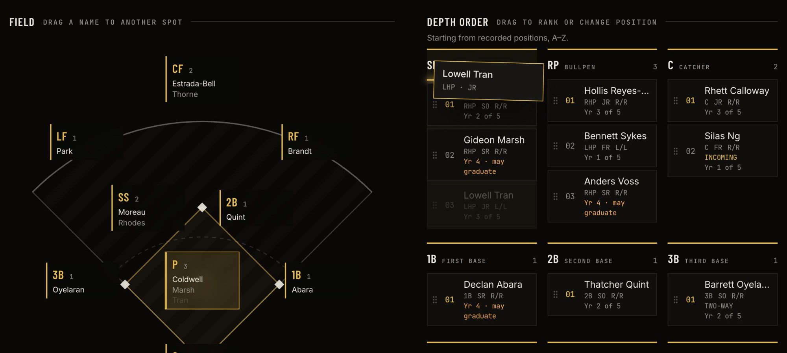
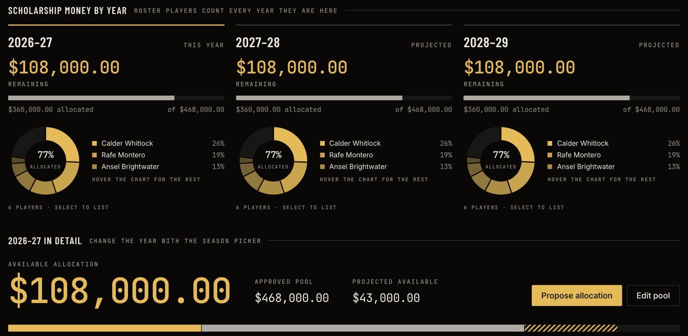
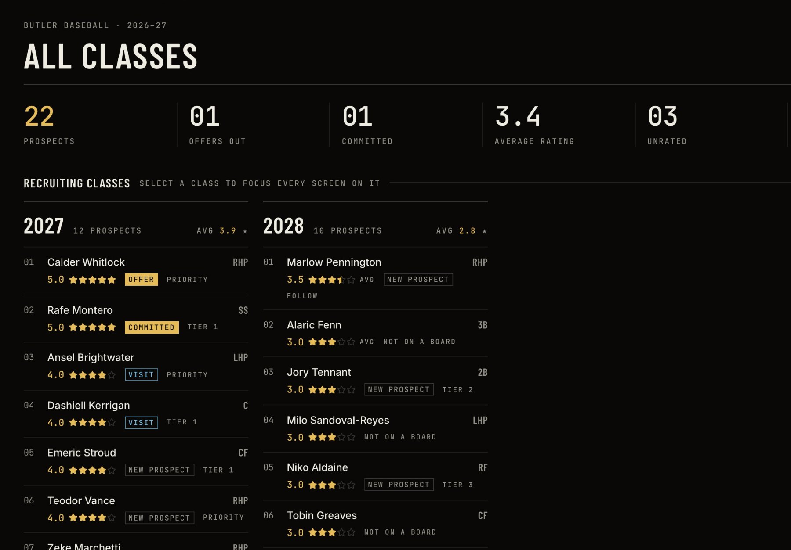
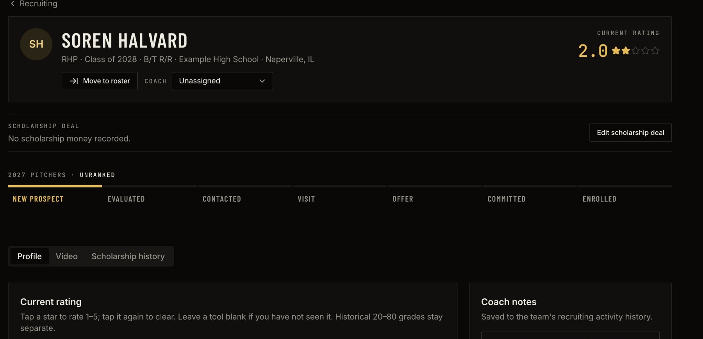
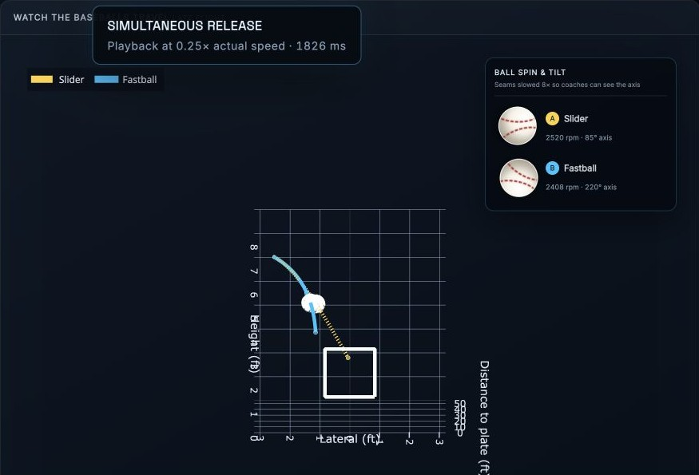
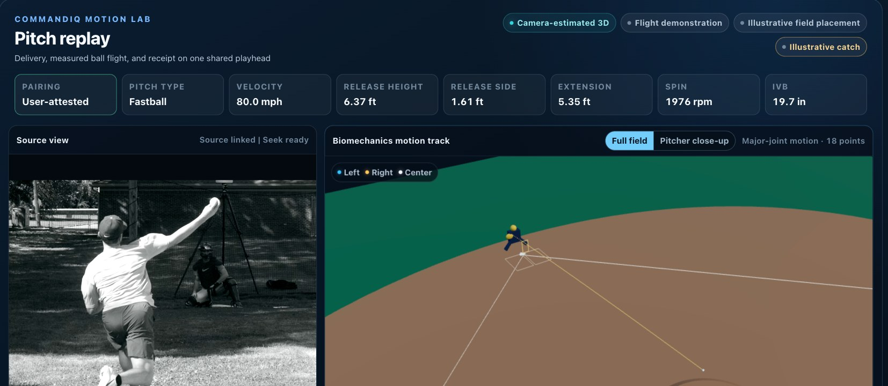
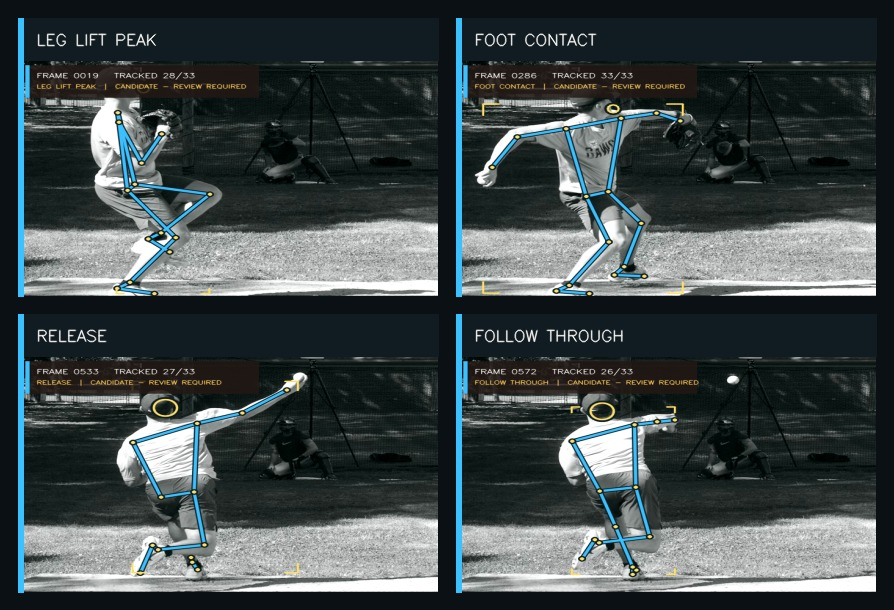
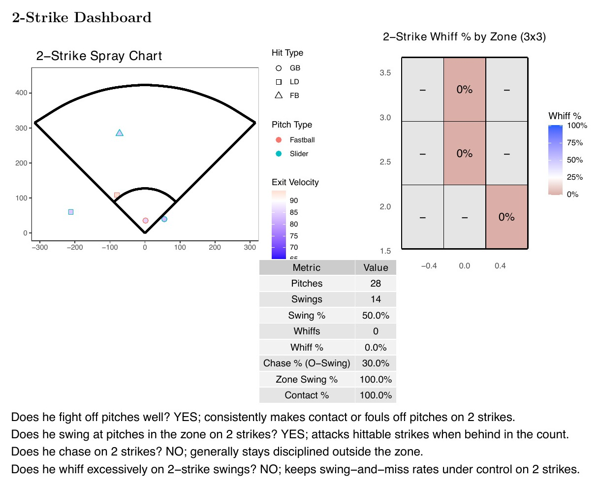
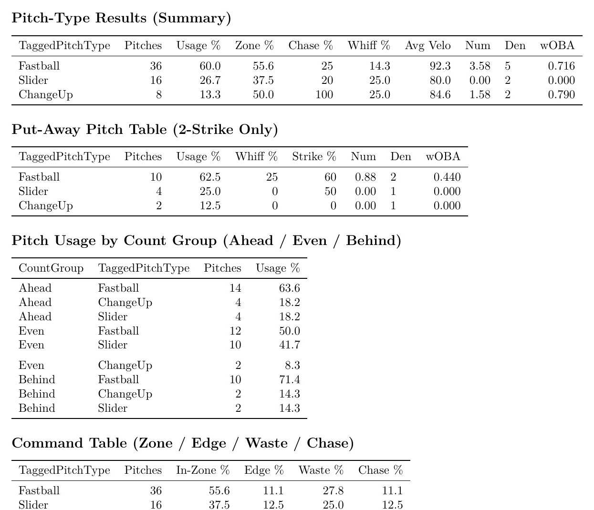

LucasBaquero
I build the tools a baseball staff actually opens: recruiting boards, pitch-flight models and motion tracking.

Player development and scouting with Butler Baseball. Sports Communication at Marist University, class of 2027.
Lucas.Baquero1@marist.edu
01 / 08
SelfScout
College
The whole recruiting picture for a college staff in one workspace: who they like, where each player stands, who plays where next year, and what money is left.


Depth chart
Drag a name, change the lineup
The roster sits on a field diagram beside a ranked list at every position. Here Lowell Tran is being pulled to the top of the starters, and the mound lights up to match.
- Tabs for 2027–28 and 2028–29 show the projected roster.
- Seniors are flagged “may graduate”, and incoming players are marked.
- A recruit can be moved straight to the roster for the season he arrives.

Scholarship dashboard
What’s left to spend
Money remaining this year and the next two, with each player’s share of the pool. One bar splits this year into committed, approved and still pending.
A deal can carry a different amount each year, so the projection moves when an offer does.
Classes and profiles
Every player, one click deep
The home screen ranks each class and counts offers out, commits, and players nobody has rated yet. A profile tracks the player from new prospect to enrolled, with per-tool stars, coach notes and video.


02 / 08
Pitch
Tunnel
Two pitches that look the same out of the hand are harder to hit. This rebuilds a real fastball and slider from TrackMan data and shows how long they travel together.

One Butler fastball–slider pair
18.3 in
apart at the plate.
Shows the depth and late break of two perfectly layered pitches.



03 / 08
CommandIQ
Motion Lab
Point one camera at a bullpen. Motion Lab tracks the pitcher’s joints through the delivery, builds a 3D estimate, and lines it up with the TrackMan data for the same pitch.
Camera mapping
Arm, hips and feet, frame by frame
The model follows up to 33 points on the body and flags four checkpoints for a person to confirm.
- Leg lift
- Foot contact
- Release
- Follow-through

Pitch replay
Video, motion and ball flight on one playhead
The video plays beside a 3D field view, under the TrackMan numbers for that pitch: 80.0 mph, 6.37 ft release height, 1,976 rpm.
The 3D motion is an estimate from one camera, not motion capture or a medical measurement. TrackMan numbers attach only after someone reviews the match.

04 / 08
CommandIQ
Command is the gap between where a pitch was supposed to go and where it went. CommandIQ draws the intended target on video so you can see that gap.

How a session runs
- Import pitch type, velocity and location from TrackMan or Rapsodo.
- Mark the target by clicking the glove, or start from a computer-vision suggestion.
- Confirm. Nothing is applied until the coach signs off.
- Review every pitch against its target and export a report.
05 / 08
Hitter Damage
& Swing Efficiency
A hitter model that separates how hard and how well a ball is hit from whether the swing was a good idea in the first place.


Only one target cleared the bar I set: next-season damage per contact. The page says so, and marks the rest provisional.
06 / 08
Home
Plate
An operating system for a baseball business: services, scheduling, payments, programs and player results, all tied to the same athlete records.


Screens are from a native iOS test build using demonstration data.
07 / 08
MLB Attack:
Pitch Sequencer
A one-page plan for how to attack a hitter. For every count it gives a first-choice pitch and location, plus a backup.

The plan changes the second time through the order, because the hitter has already seen the stuff once. It’s a planning aid: a coach still weighs how the pitcher feels that day.
08 / 08
Player Development
Dashboard
Ball Fox reports for college hitters and pitchers. Each one is built around a question a coach would actually ask.


ALSO
SelfScout
The original mobile scouting workspace: player profiles, hitter and pitcher reports, 20–80 grades, staff boards and roster planning.
Project notes →ALSO
DHD Self-Development App
The hub app for Diamond Hitting Development, where players and coaches set and track short-term and long-term goals.
Experience
Full resume ↓
Butler Baseball
Player Development and Scouting Remote Volunteer
Data analysis and pre-series scouting for the coaching staff, plus the tools on this page.
Sep 2026 – Present

Diamond Hitting Development
Baseball Data and Development Intern
Lead internal data systems and client-facing apps, including the DHD hub for player goals.
Apr 2026 – Present

SportsForce Baseball
Scouting Intern
Evaluated uncommitted hitters and pitchers on video and metrics; data projects in R and Python.
Summer 2026

Marist Sports Network
Co-Founder, Executive Producer, and Webmaster
Produce the Red Fox Report and pregame shows, and run production, hockey, live broadcasts and radio.
Aug 2025 – Present

Marist Football (D1, FCS)
Offensive Line Student Assistant
Play signaling, recruiting and personnel tasks, and on-field coaching of the offensive line.
Aug 2024 – Dec 2025

Big Apple Umpires
Umpire
Umpire 8U through 15U games across Long Island.
Mar 2024 – Present

Hard90 Baseball
Assistant Coach, 8U/10U
Taught hitting, fielding and pitching to 8U and 10U players.
Feb 2023 – Mar 2024

Marist University
B.A. Communication, Sports Communication
GPA 3.69. Coursework in statistics, economics, sports media and broadcasting.
Aug 2024 – May 2027
Get in touch
Lucas.Baquero1@marist.edu